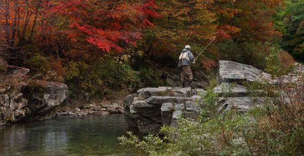
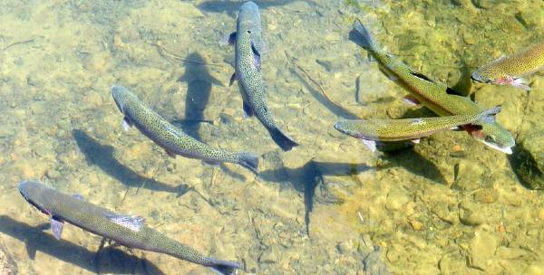

Come see all that Heber has to offer!
Heber City was founded by English immigrants who were members of The Church of Jesus Christ of Latter-day Saints in the late 1850s, and is named after the
Mormon apostle Heber C. Kimball. It is the county seat of Wasatch County. The original Heber City town square is located on the west side
of Main Street between Center Street and 100 North and currently houses city offices as well as the historic Wasatch Stake Tabernacle
and Heber Amusement Hall. The city was largely pastoral, focusing largely on dairy farms and cattle ranching, and has since become a
bedroom community for Orem, Provo, Park City and Salt Lake City.
Heber City is currently governed by Mayor Kelleen Potter along with City Council Members.
Within the city limits are Heber Valley, Old Mill, Daniels Canyon and J.R. Smith Elementary Schools, Timpanogos Middle School,
Rocky Mountain Middle School, Wasatch High School, and Wasatch Alternative High School. An additional school in the Heber Valley
is Midway Elementary School. All of these schools are part of the Wasatch County School District. Utah Valley University maintains
a satellite campus just north of Heber City along the US-40 corridor.
Heber City contains five LDS stakes, as well as congregations of Southern Baptists, Catholics as part of the Diocese of Salt Lake City,
and Jehovah's Witnesses. (https://idahohighcountry.org/)
Come experiance the beautiful night sky!
The night sky has inspired us for generations. Nighttime views and environments are among the critical park features the
National Park Service (NPS) protects. Night sky protection enhances qualities of solitude and undeveloped wilderness
character that animals depend on for survival, park visitors seek for connections, and many cultural-historical parks
require for preservation. In this regard, the NPS recognizes a naturally dark night sky as more than a scenic canvas; it
is part of a complex ecosystem that supports both natural and cultural resources. (https://www.nps.gov/subjects/nightskies/index.htm)
A star is an astronomical object consisting of a luminous spheroid of plasma held together by its own gravity. The nearest star to
Earth is the Sun. Many other stars are visible to the naked eye at night, but due to their immense distance from Earth they
appear as fixed points of light in the sky. The most prominent stars are grouped into constellations and asterisms, and many
of the brightest stars have proper names. Astronomers have assembled star catalogues that identify the known stars and provide
standardized stellar designations. The observable universe contains an estimated 1022 to 1024 stars, but most are invisible to
the naked eye from Earth, including all individual stars outside our galaxy, the Milky Way.
(https://en.wikipedia.org/wiki/Star)
Try fly fishing in Heber.

Fly fishing is an angling method that uses a light-weight lure—called an artificial fly—to catch fish. The fly is cast
using a fly rod, reel, and specialized weighted line. The light weight requires casting techniques significantly different
from other forms of casting. The flies may resemble natural invertebrates, baitfish, or other food organisms.
Fly fishing can be done in fresh or saltwater. North Americans usually distinguish freshwater fishing between cold-water
species (trout, salmon, steelhead) and warm-water species, notably bass. In Britain, where natural water temperatures
vary less, the distinction is between game fishing for trout and salmon versus coarse fishing for other species.
Techniques for fly fishing differ with habitat (lakes and ponds, small streams, large rivers, bays and estuaries,
and open ocean.) (https://en.wikipedia.org/wiki/Fly_fishing)
Heber has an abundace of rainbow trout!

Rainbow trout are coldwater fish that have long been associated with clear, healthy mountain streams and lakes in North America.
Because of their ability to thrive in hatcheries, rainbow trout have been introduced into much of the United States and now
inhabit many streams and lakes throughout the country. The popularity of rainbow trout among anglers has placed it among the
top five sport fishes in North America, and it is considered by many to be the most important game fish west of the Rocky
Mountains.
However, reduction of good quality trout habitat due to streambank and upland soil erosion, loss of riverside vegetation, water
diversion, logging and mining activities, and pollution from municipal development and agriculture have significantly reduced
the distribution and abundance of rainbow trout. In addition, construction of dams, road crossings, and other structures
impede the ability of rainbow trout to migrate upstream and downstream, which is critical to successful completion of their
life cycles. Consequently, nine different populations of steelhead (sea-run rainbow trout) have been added to the federal
endangered species list. (https://www.fws.gov/southeast/wildlife/fishes/rainbow-trout/)